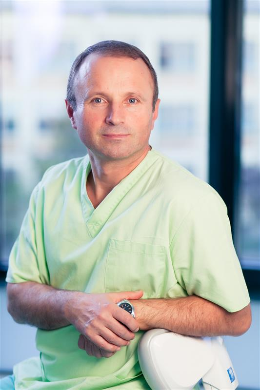

DentaWeb, asezamant medical s-a nascut din freamatul si neastamparul tanarului absolvent al Facultatii de Stomatologie din Cluj Napca, Dr. Grigore Turda. Isi dorea altceva decat ceea ce ofereau conditiile din cabinetele oferite de policlinicile din sistemul de stat de atunci. Se intampla in 1992, la doi ani de la evenimentele din Decembrie 89 din Romania. A inceput cu o activitate privata desfasurata in 3 cabinete avand o mare adresabilitate din partea pacientilor inca de la deschidere. Curand spatiul a devenit neincapator, ceea ce a impus dezvoltarea unei strategii de extindere si deiversificare a activitatilor stomatologice concomitent cu studii postuniversitare pentru a presta o activitate de cea mai buna calitate. A inceput constructia si apoi dotarea unui complex de 10 cabinete stomatologice in care si-a desfasurat activitatea o echipa de 10 medici alaturi de asistente si personal administrativ, in februarie 1999. Nu dupa mult timp, a urmat dotarea si inceperea activitatii de laborator tehnica dentara cu opt tehnicieni, apoi un laborator de Radiologie stomatologica. Din Mai 2005 am dezvoltat compartimentul de Implantologie, Parodontologie si Chirurgie orala. Lucrurile au mers crescand an de an. Activitatea profesionala era din ce in ce mai performanta si spatiul era din nou insuficient, motiv pentru care s-a contactat un arhitect pentru a regandi o noua extindere. Din 2013, Dent Medica are o noua infatisare, un concept arhitectural deosebit de modern, cu o linie estetica de exceptie dar si cu o dotare materiala si umana pe masura. Functionam astazi intr-un cadru ambiental imbietor atat pentru pacienti, cat si pentru personal. Am intentionat sa aducem an de an tot ce era mai bun in ce priveste dotarea cu aparatura si instrumentar, materiale si tehnici care sa raspunda exigentelor celor mai pretentiosi pacienti. Din toate acestea, consideram echipa formata de-a lungul anilor ca cel mai pretios dar, iar pacientii ne sunt corolarul eforturilor depuse zi de zi. Dr. Grigore Turda |

|